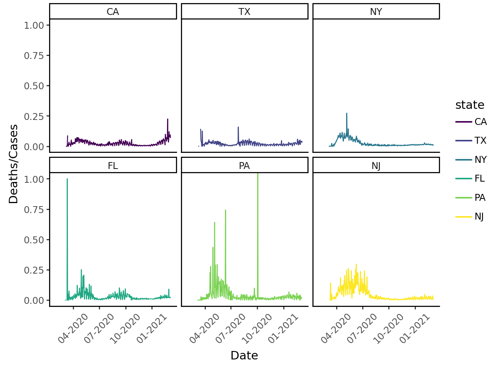

In this analysis, I’m going to use the data from The COVID Tracking Project, which describes the data as follows:
We collect, cross-check, and publish COVID-19 data from 56 US states and territories in three main areas: testing, hospitalization, and patient outcomes, racial and ethnic demographic information via The COVID Racial Data Tracker, and long-term-care facilities via the Long-Term-Care tracker. We compile these numbers to provide the most complete picture we can assemble of the US COVID-19 testing effort and the outbreak’s effects on the people and communities it strikes.
state
CA 54124
TX 44451
NY 39029
FL 32266
PA 24349
NJ 23574
Name: deaths, dtype: int64
Figure 1 illustrates the trend in the death-to-case ratio over time for these states.
Code
# which six states had more deaths?sum_deaths_ordered = covid. \groupby('state'). \sum('deaths'). \sort_values('deaths', ascending=False)# get the six state list top_six = sum_deaths_ordered.head(6).index.values.tolist()# filtercovid = covid.loc[covid.state.isin(top_six)]# remove NA and negative values covid = covid.dropna()subset = covid.loc[(covid['deaths'] >=0) & (covid['cases'] >=0)]# create new column = deaths/cases ratiosubset['cases_death_ratio'] = (subset['deaths'] / subset['cases'])subset['state'] = pd.Categorical(subset['state'], categories=top_six, ordered=True)# plot(ggplot(subset, aes(x='date')) + geom_line(aes(y='cases_death_ratio', group='state', color='state')) + facet_wrap('state') + theme_classic() + scale_x_datetime(breaks=date_breaks("3 months"), labels=date_format("%m-%Y")) + labs(y='Deaths/Cases', x='Date') + theme( axis_text_x = element_text(rotation=45))).show()
Figure 1: Deaths-cases ratio on time.

It appears there are specific spikes on the plot where the death-to-case ratio exceeds 0.5. Three out of the four days when more people died than were diagnosed occurred in Pennsylvania. Let’s take a closer look: